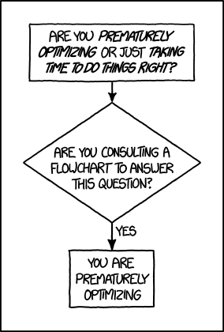
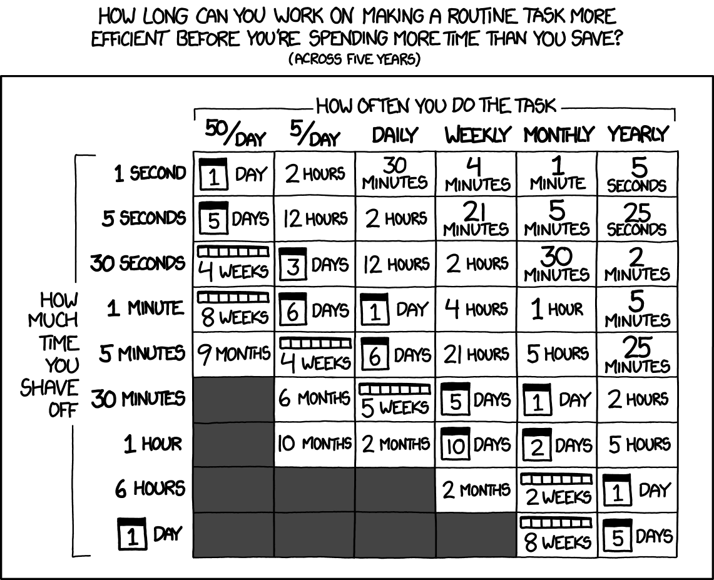
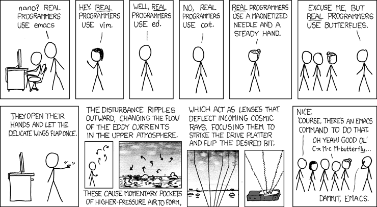

flowchart LR
A[The<br>shell] --> B[tmux: Remote &<br>long jobs]
B --> C[Reproducible<br>Python]
C --> D[Git]
D --> G[vim,<br>just enough]
G --> E[Writing &<br>diagrams]
E --> F[AI]
A hands-on tour, with live demos
2026-10-22
whoamiThe best way to get the right answer on the Internet is not to ask a question; it’s to post the wrong answer. — Cunningham’s Law
Premature optimization is the root of all evil. Yet we should not pass up our opportunities in that critical 3%. — Knuth’s adage
Same for tooling: don’t build a perfect pipeline on day 1.
Do notice the critical 3%: the things you do 100×/day

https://xkcd.com/1691/

https://xkcd.com/1205/
The goal is not more tools. The goal is fewer keystrokes for the things you do constantly.
flowchart LR
A[The<br>shell] --> B[tmux: Remote &<br>long jobs]
B --> C[Reproducible<br>Python]
C --> D[Git]
D --> G[vim,<br>just enough]
G --> E[Writing &<br>diagrams]
E --> F[AI]
alias lets you replace a full command with a shorthandSome aliases I use on a daily basis:
Ctrl+R (fuzzy history search via fzf)z myproj — jump anywhere (zoxide)grep for a reason: fast, respects .gitignore, colourfulPair it with fzf: Ctrl+T inserts any fuzzy-matched file path.
cat with syntax highlighting, line numbers, git gutterrg "TODO" across a messy projectrg "learning_rate" --type py -C 2batopen . — open anything (folder, file, URL) from the shellz + Tab in the browser -> search arXiv directlyMac only:
pbcopy and pbpaste: copy/paste from command line to OS clipboardwatch its loged25519) → no more passwords~/.ssh/config → nicknames for clustersThen simply: ssh margaret
But then:
The environment is part of the method
numpy>=1.24 is not enough – numpy==1.24.3 is a necessity
uv.lock, pixi.lock) pin everything, transitivelyrequirements.txt pinned = the environment your results came frompixi.toml = python version + deps + tasks, cross-platform[tasks]
train = "python train.py"
test = "pytest tests/"
# Combine complex tasks in a single command, set env variables
render = {cmd = "quarto render && cp -r slides/data/dataop_report/ _build/slides/data/", env = { "SKB_TABLE_REPORT_VERBOSITY" = "0" }}
# Have tasks depend on each other
serve = { cmd = "python -m http.server --directory _build 8000", depends-on = ["render"]}venv and pip:Rule of thumb: uv for pure-Python projects, pixi for CUDA, tasks, environment-specific operations.
uv init + uv add a stackuv run inside the projectpixi.toml + lockfile of a real projectcd demo/ruff-demo && ruff check . — everything wrong with the coderuff check --fix . && ruff format .git diff — same code, readable%history, ? and ?? for introspectionIn a jupyter notebook:
%autoreload 2 – edit module, REPL sees it instantlymainUse tags like a time machine: git diff v1.0-baseline HEAD shows exactly what changed between the two results in your paper.

https://xkcd.com/378/
INSERT, NORMAL, VISUALYou don’t have to live in vim. Learn how to survive, then take the keybindings back to your IDE (with extensions).
Modes: i insert · Esc normal · v visual
Move: h j k l · w b words · 0 $ line ends · gg G file ends
Edit: dd delete line · yy copy line · p paste · u undo · Ctrl-r redo
Search: /pattern then n
Commands: : followed by a letter – write changes with :w
Actually exiting vim: exit with :q, without saving with :q!, write and exit :wq
The magic: ciw change inner word · ci" inside quotes · ci( inside parens
Rebind your CAPS key to Esc. You’ll thank me later.
/ to find, ci" to change a string, dd a stray line, p paste:wq — hands never left the keyboard.qmd (markdown + code) -> PDF, HTML site, slides, WordWarning
Going from slides to blogs can be slightly to extremely janky.
flowchart LR
A[Read papers] --> B{Idea?}
B -->|no| A
B -->|yes| C[Experiment]
C --> D{Works?}
D -->|no| B
D -->|yes| E[Write it up]
Excalidraw when you need to think freehand; Mermaid/Graphviz when the diagram needs to live in the repo.
If you know the enemy and know yourself, you need not fear the result of a hundred battles. — Sun Tzu
Describe your workflow to an AI chat, ask for suggestions on how to be more productive.
It’s how I found out about many of these tools.
0.04€ with GLM-5.3 Flash on OpenRouter
https://github.com/rcap107/tooling-talk
.zshrc.example, tmux.conf.example, pixi.toml, ruff.toml…Tools & tips for researchers